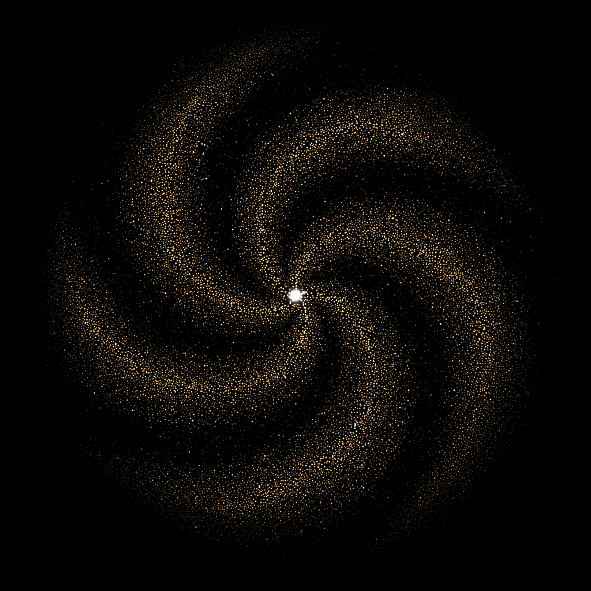

AnthropicPresence
A little signal.
A whole bloom.
Discord presence card showing AI make & model, what it’s working on (chat title), and for how long. Your friends see the same card. Chats running at once take turns, across models too, so you can watch your agents hand off tasks live. Want more models? See AI Discord Presence on GitHub ↗.